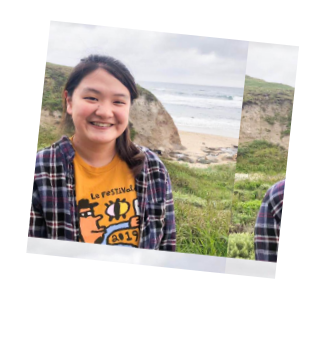

My name is Esther Jang and I am a rising junior at Carnegie Mellon
University, majoring in electrical and computer engineering (ECE) with
a minor in robotics. I currently am interning at IBM Aspera for the
summer as a backend developer. My past experiences also include
research with the School of Computer Science and TA-ing for an
introductory CS course at CMU.
I love to chill to lofi and pop music (it helps me focus!) as well as
exploring new technologies and hobbies in my free time. I currently am
learning React and how to play the ukulele~
